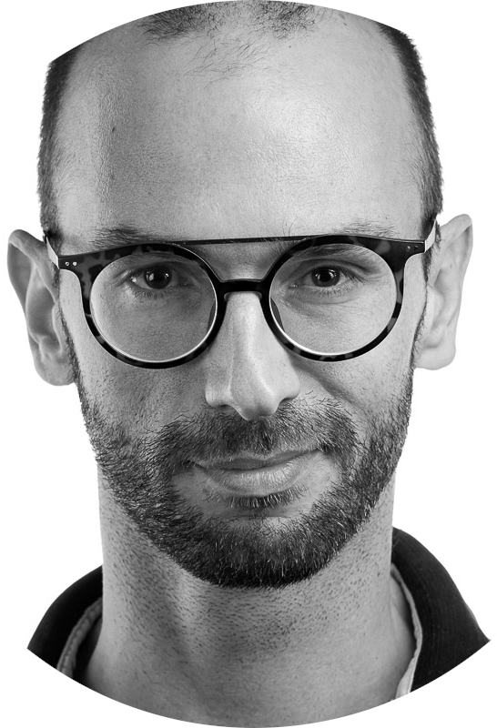

Dear Mr. Steenbergen,
I am interested in the position Engineering Manager, which I believe reports to you. I came across the position on Federato's careers page.
Federato raised a $100 million Series D led by Goldman Sachs.
What drew me to the position is the requirement of growing and coaching a team while staying close to delivery, which closely resembles my work at UBP. I built and scaled the bank’s new order-management platform team from the ground up, led a team of 6, and coached the new joiners. I owned the design and delivery of the order-capturing tool across four systems and brought it in ahead of schedule.
Insurance and AI would be new to me. I am based in Zurich, an EU citizen on CET, and open to a contractor or employer-of-record setup.
I'd welcome a short conversation if you're open to it.
Kind regards,
Georgios Valotasios